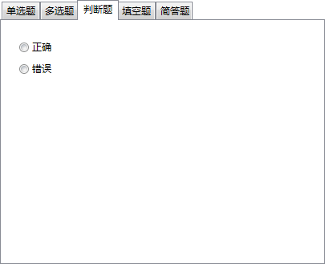

新建题目
新建题目
新建题目界面如下：
每道题目的描述输入在“题干”编辑框中，长度不限，允许换行，不可为空。
用于指定题目类型，选择哪个选项卡即指定此题目为哪个类型。
需要注意的是，如果在主界面左侧窗格选中题库节点，则弹出的新建题目对话框将包括全部类型题目的选项卡，且可自由切换；如果在主界面左侧窗格选中默认类型节点，则选项卡锁定在此类型页面，不可切换；如果在主界面左侧窗格中选中自定义类型节点，则仅显示当前自定义类型选项卡。
 | 若在多个类型选项页面中有内容的输入，当创建题目完毕后，除最终选定的类型以外的页面内容均丢失。 |
|---|
选择题最多支持8个选项，在各选项框中输入选项文字，每个选项最多支持512个字符，忽略一切换行，左侧的单选框/复选框用于设置题目答案。有效选项必须包含非空白字符，若不输入或只输入空白字符，则视为无效选项，在空白选项上设置答案也视为无效答案。无效选项和无效答案将不会被生成，有效选项之间夹杂空白选项不会影响最后题目的生成。
每个选项框右侧的“设...”按钮是将取得的文字粘贴入左侧选项框中，底部的“智能识别”按钮是将取得的文字按一定规律识别为多个选项分别粘贴入选项中。
“取得文字”的规则如下。
- 若内置文本编辑器被打开，且在其中选中了部分文字，则取得被选中的文字。
- 若内置文本编辑器未打开，或未在内置文本编辑器中选中内容，则取得剪贴板中的文字。
- 若不符合前两项，则无法取得文字。
“智能识别”的规则如下：
- 文字中所有的换行均被忽略。
- 每个选项前必须有选项号才会被识别为一个选项，选项号可以为全/半角英文字母A~H（不区分大小写）、全/半角数字1~8。
- 符合以下三种情况：①选项号用若干个任意括号括起来，②选项号后紧跟若干个点符号/句号/顿号，③选项号后有若干个空白，将被识别为有效的选项号，并视为一个新的选项的开始；否则此部分内容仍被视为前一个选项的内容。
例如：“A、选项1” “（B）选项2” “C 选项3”这三种文字形式均可被识别为一个新的选项；“D选项4”这种文字形式不会被识别为一个新的选项，将被并入前一个选项。
较复杂的情况，例如：“(（E、。 ）) 选项5”，由于符合有效选项号的规则，也可以被正确识别，但为了避免歧义，请尽量避免这种情况。
- 当选项号为前述①的类型时，选项之间可以不做分隔；如果选项号为前述②③类型，选项之间必须用分隔符号分隔开，分隔符号可选用空白字符、句号、分号。
例如：“(A)选项1(B)选项2”“A、选项1 B、选项2”可被正常识别为两个选项，“A、选项1B、选项2”将被识别为一个选项。
- 选项开头和末尾的分号、句号、空白字符，将被忽略。
- “智能识别”功能仅用于识别选择题选项，请保证取得的文字中仅包含选项部分，本功能也不能识别题目答案。

判断题支持“正确”与“错误”两个答案。
填空题最多支持32个空白，每个空白的答案长度不限。
添加：必须首先输入题干，然后在题干中选中要添加为空白的部分，有如下两种情况：①若选中的部分即该空白的答案，则不需要在选项页面中输入答案，直接点击“添加”按钮即可添加带答案的空白；②若仅为题干中添加空白，则需要在选项页面中输入答案，随后再点击“添加”按钮添加空白（若选中部分有其他字符，也将替换为空白）。
| 当添加了至少一个空白后，“题干”编辑框将处于不可编辑的状态，只允许添加或删除空白；
当添加了至少一个空白后，若此时希望将题目修改为其它类型，则会丢失全部空白信息，空白答案将保留在题干中；
若选中部分的左右两侧没有检测到括号，在添加过程中将自动添加括号；
若在添加过程中没有检测到答案，将提示添加失败。 |
|---|
修改答案：在下方列表中选中希望修改的答案，并在“答案”编辑框中输入新答案，点击“修改答案”即可。
带答案删除：在下方列表中选中希望删除的空白，点击“带答案删除”，可以删除选中的空白，空白答案将保留在题干中。
无答案删除：在下方列表中选中希望删除的空白，点击“无答案删除”，可以删除选中的空白，答案将被丢弃，题干不做改动。
直接在“答案”编辑框中输入答案，长度不限，允许换行。
当前题目的解析，长度不限，允许换行。
在已创建好的题目之间切换，在切换前将自动保存对当前题目的修改。
保存当前题目的修改，并创建一个新题目。
删除当前的题目。
自动将符合一定规范的文字段落转换为题目，详见
批量生成。
选中后可以使对话框始终处于窗口顶端。
显示或隐藏如下的题目列表。可以通过双击列表项快速跳转至指定题目，也可右键批量删除选中的题目。
若题目未设置答案，则会在“状态”一栏中显示“无答案”字样。
| 每道题目必须设置答案，未设置答案的题目不可加入题库中。 |
|---|
启动一个内置的文本编辑器，用法和Windows记事本基本相同，不再另行说明。
点击“确认”按钮，自动保存当前题目的新建，退出界面，并将新建的全部有效题目保存入当前题库中。
“有效题目”的定义如下。
- 题干中包含至少一个有效字符。
- 单项选择题/多项选择题：设置了至少一个选项，并已设置答案。
- 判断题/简答题：设置了答案。
- 填空题：设置了至少一个空白，并为全部空白设置了答案。
不点击“确认”而退出将丢失所有新建题目。
GX Software 2020-2021
V2.0